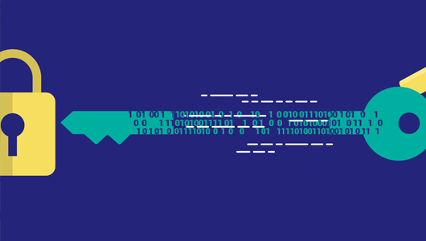

La maña del 9 de marzo ha empezado con un ataque informatico al Servicio Público de Empleo Estatal. Mediante un Ransomware llamado Ryuk, el cual ya habia causado daños en el pasado.
Un Ransomware es un tipo de ataque informatico que se lleva a cabo infiltrandose en el sistema y una vez esta dentro cifra todos los datos y los hace inaccesible para todo aquel que no sepa que tipo de cifrado se ha usado y las claves del mismo.
Al tener todos los datos encriptados, solo se deja acceso a ellos a los que tienen la clave de cifrado, es decir los datos estan inaccesibles. Normalmente estos ataques llevan consigo un rescate para que se quiete el encriptado. Este rescate consta de un pago de la cantidad que decida el atacante, normalmente el pago se hace en criptomonedas ya que estas son mas complicadas de rastrear. Ademas de encriptar tambien se suele hacer una copia de los datos, si ese pago no se efectua el atacante puede publicar esos datos para que esten visibles a todos.
La verdad que evitar un ataque de este tipo es complicado. Hay que comprobar regularmente actividad sospechosa, como el trafico de la red, los propios registros del sistema.
Lo mejor que se puede hacer es tener siempre actualizado el equipo, ya que estan constantemente resolviendo vulnerabilidades que los cybercriminales pueden usar. Por ultimo para tratar de perder no minimo posible y recuperar el control es tener siempre backups recientes, es decir tener copia del sistema, que en caso de que sea atacado se pueda restaurar desde una copia anterior y solo se pierdan los datos de ultima hora.
Por ultimo os dejo un video para que sea mas sencillo entender que es un Ransomware